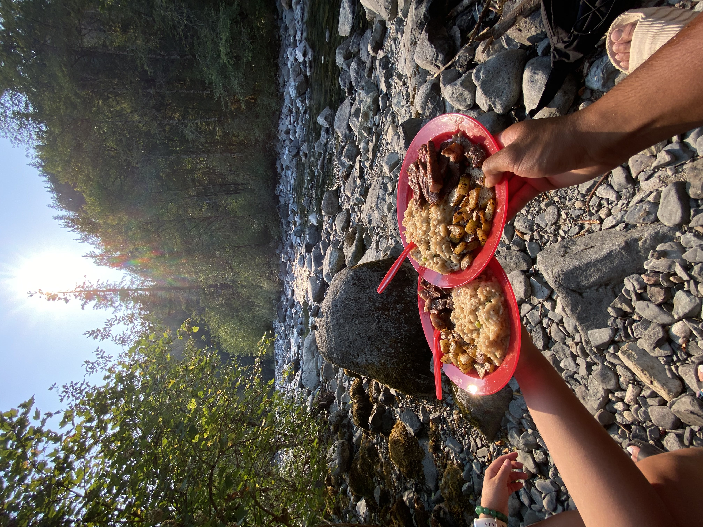
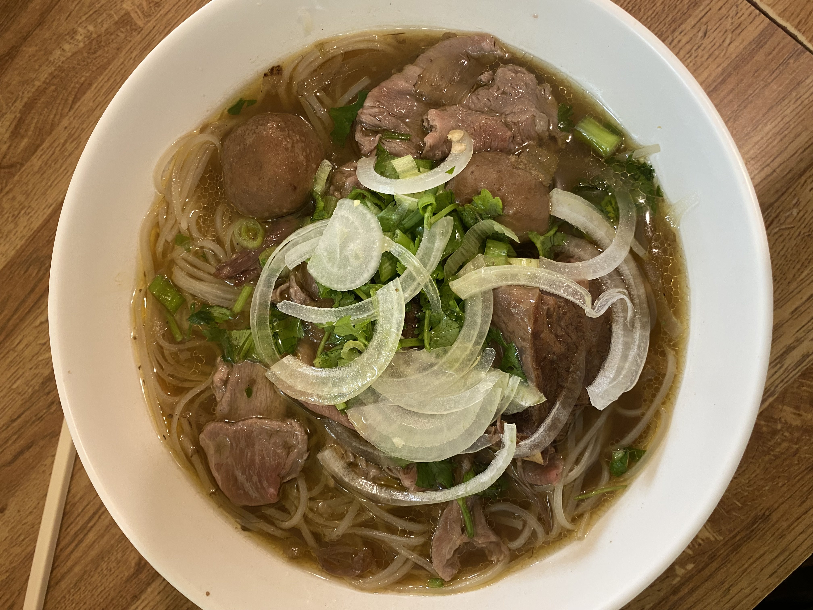
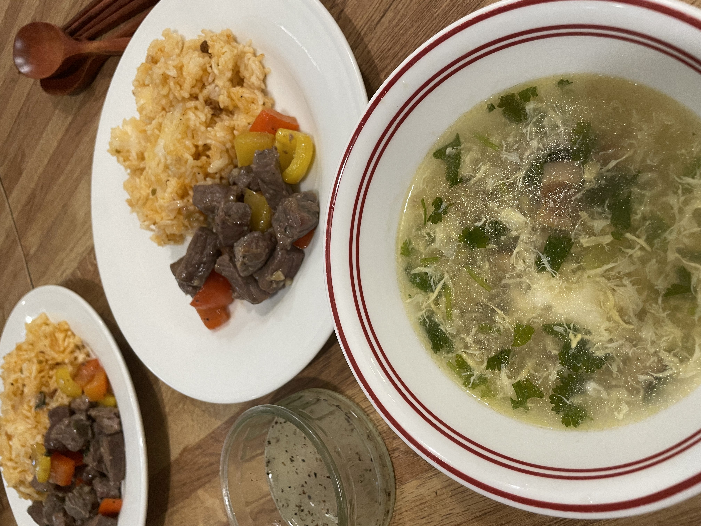
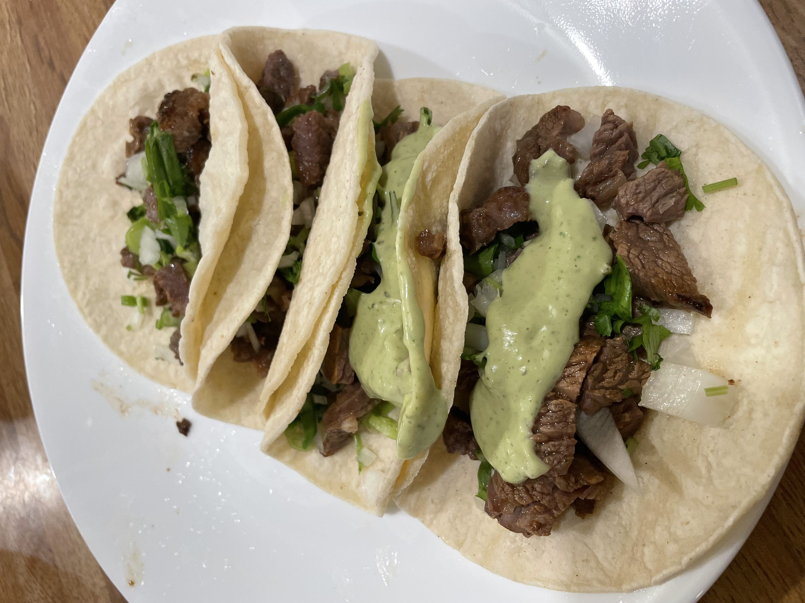
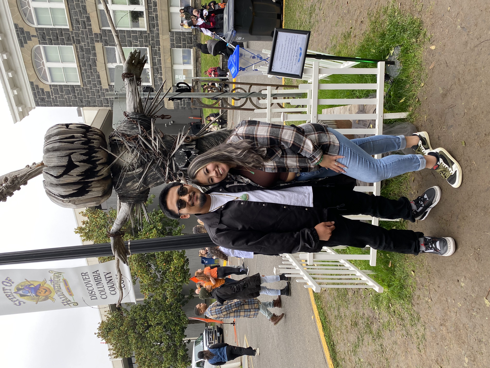
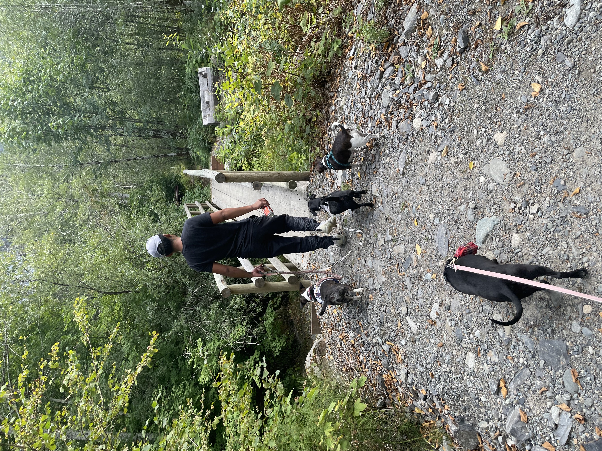
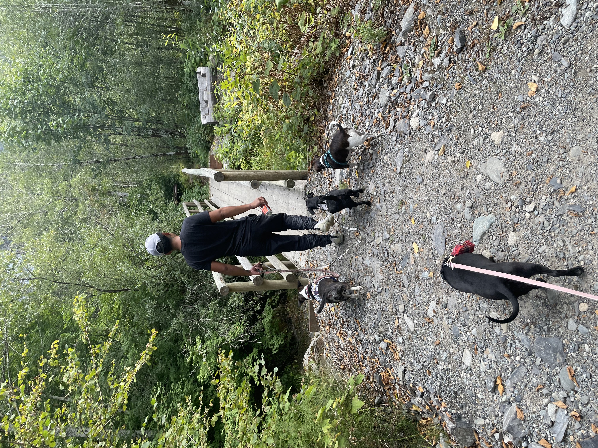

Cooking
I live with my Fiance and our 4 dogs. After we finish with work and school it gets pretty late. Although just going out to eat would be more convient, its also a lot more expensive than Cooking at home. We both take turns cooking dinner and even cook together some days as a date night activity. These are just a few images of the stuff we have cooked.




Outdoors
We spend a lot of time outdoors, whether if thats camping, going on hikes, or just driving around. We also really love traveling and recently came back from a month long trip to the Philippines. Whenever we get the chance, we will also bring our dogs along with us so they can have as much fun as we are. The pictures I have included shows a little bit of what we like to do on our free time.
 
